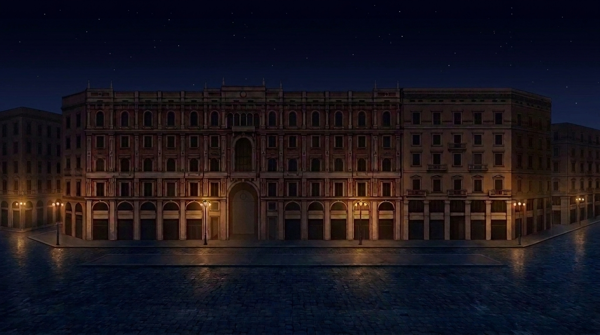

La piazza al buio
Questo è Palazzo Carminati com’era prima delle insegne. Scorrendo si accendono quelle che c’erano davvero, anno per anno, nel punto esatto in cui erano montate.
Milano · Piazza del Duomo · 1945–1999
Per mezzo secolo, sul palazzo di fronte alla cattedrale, si sono accese e spente più di cento insegne pubblicitarie. Messe in fila, raccontano come è cambiata Milano, e cosa voleva comprare.
I giornali la chiamavano “la Times Square di Milano”, Umberto Saba dedicò loro una poesia, e per chi ha vissuto o frequentato Milano prima del 2000 sono un piccolo ricordo indelebile: le insegne luminose di piazza del Duomo, montate su Palazzo Carminati, proprio di fronte alla cattedrale.
È difficile dire quando fu montata la prima. Di sicuro [da completare: la prima attestazione certa, con anno e fonte]. Il palazzo era stato costruito nel [da completare], e da allora fa da contraltare, profano e posizionato con una certa precisione, a una delle facciate sacre più famose d’Italia.
Per oltre cinquant’anni quelle luci hanno fatto da sfondo alle vite di migliaia di persone: chi attraversava la piazza per andare al lavoro, chi ci si dava appuntamento, chi ci arrivava in gita. Guardate anno per anno raccontano piuttosto bene come è cambiata la città: cosa produceva, cosa comprava, cosa sognava di comprare.

—
La piazza al buio
Questo è Palazzo Carminati com’era prima delle insegne. Scorrendo si accendono quelle che c’erano davvero, anno per anno, nel punto esatto in cui erano montate.
Alla fine della guerra
1948
insegne accese
Le prime insegne del dopoguerra vendono cose semplici: dentifrici, scarpe, rasoi, impermeabili, sapone, cioccolato. Non uno stile di vita, ma quello che serve, e che per qualche anno era mancato.
Il boom economico
1958
insegne accese
Arrivano le bibite (la Coca-Cola si accende nel 1953), poi penne, carta carbone, liquori, lucido da scarpe: gli oggetti di un paese che lavora sempre più in ufficio e comincia a concedersi qualcosa.
Negli anni di piombo
1975
insegne accese
Orologi, elettrodomestici, aperitivi, birre, abiti su misura. In piazza sono anni di cortei e di tensioni; sopra, la pubblicità continua a promettere benessere.
La Milano da bere
1987
insegne accese
Quasi solo tecnologia e finanza: impianti hi-fi, televisori, videocassette, fotocopiatrici, sempre più spesso di marchi giapponesi. E poi banche, banche, banche.
Fine secolo
1999
insegne accese
Ne restano poche, quasi tutte di elettronica. [Da completare: cosa succede dopo il 2000.]
Tutto di fila
Continuando a scorrere si attraversano tutti i 54 anni, dal primo dopoguerra alla fine del secolo.
Piazza del Duomo non è mai stata solo una piazza. È il posto dove Milano celebra la propria vita pubblica, e anche lì sacro e profano si mescolano senza troppi imbarazzi: i funerali e le manifestazioni, i concerti, gli addobbi di Natale. Le insegne stavano sopra a tutto questo, e nelle fotografie di quegli anni finiscono quasi sempre sullo sfondo.
Un contraltare profano, perfettamente posizionato di fronte a una delle facciate sacre più famose d’Italia.
Raccontano anche una città che ha sempre cercato di essere moderna, a volte riuscendoci e altre volte no, e che per molti è stata il posto in cui riporre le speranze di un futuro migliore. Le insegne, in fondo, servivano a mostrarlo, quel futuro, un marchio alla volta.
Il catalogo
Consumismo, edonismo, innovazione, tecnologia: ogni insegna mai apparsa sulla facciata, ridisegnata a mano. Passandoci sopra si vedono gli anni in cui è rimasta accesa.
La cronologia
Ogni arco è un’insegna: comincia l’anno in cui si accende e finisce quello in cui si spegne. Il cerchio parte dal 1945 e gira in senso orario fino al 1999.
Alcune sono durate pochissimo, un anno o poco più. Altre hanno attraversato decenni: quella di Hermes è rimasta accesa dal 1946 al 1976, quella del lucido da scarpe Brill dal 1951 al 1979. Con il cursore si vede quali erano accese in un certo anno.
L’archivio
Le fotografie d’archivio da cui sono state ricostruite le insegne, dal dopoguerra alla fine degli anni Novanta.
[Da completare: come e quando sono state tolte.] Di sicuro dovevano essere bellissime con la nebbia, che è svanita più o meno insieme a loro.
Fra le tue pietre e le tue nebbie faccio
villeggiatura. Mi riposo in piazza
del Duomo. Invece
di stelle
ogni sera si accendono parole.Niente riposa della vita come
la vita.
Il video
Questo progetto di Andrea Giambelli si è incrociato con il lavoro degli MM, un duo che scrive musica elettronica in dialetto milanese: le insegne di piazza del Duomo, riaccese una per una, sono diventate il video della loro canzone “Milan me bel belèe”.
Il disco degli MM si chiama Nisun ed esce a [mese] 2027.